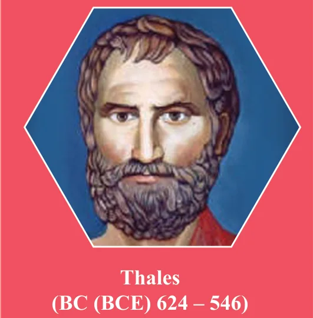
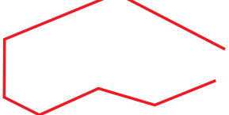

4 GEOMETRY
Inspiration is needed in geometry just as much as in poetry. - Alexander Pushkin

Thales (Pronounced THAYLEES) was born in the Greek city of Miletus. He was known for theoretical and practical understanding of geometry, especially triangles. He used geometry to solve many problems such as calculating the height of pyramids and the distance of ships from the sea shore. He was one of the so-called Seven Sagas or Seven Wise Men of Greece and many regarded him as the first philosopher in the western tradition.
Learning Outcomes
- To understand theorems on linear pairs and vertically opposite angles.
- To understand the angle sum property of triangle.
- To understand the properties of quadrilaterals and use them in problem solving.
- To understand, interpret and apply theorems on the chords and the angles subtended by arcs of a circle
- To understand, interpret and apply theorems on the cyclic quadrilaterals.
- To construct and locate centroid, orthocentre, circumcentre and incentre of a triangle.
4.1 Introduction
In geometry, we study shapes. But what is there to study in shapes, you may ask. Think first, what are all the things we do with shapes? We draw shapes, we compare shapes, we measure shapes. What do we measure in shapes?
Take some shapes like this:

In both of them, there is a curve forming the shape: one is a closed curve, enclosing a region, and the other is an open curve. We can use a rope (or a thick string) to measure the length of the open curve and the length of the boundary of the region in the case of the closed curve.
Curves are tricky, aren't they? It is so much easier to measure length of straight lines using the scale, isn't it? Consider the two shapes below.

Now we are going to focus our attention only on shapes made up of straight lines and on closed figures. As you will see, there is plenty of interesting things to do. Fig.4.2 shows an open figure.

We not only want to draw such shapes, we want to compare them, measure them and do much more. For doing so, we want to describe them. How would you describe these closed shapes? (See Fig 4.3) They are all made up of straight lines and are closed.